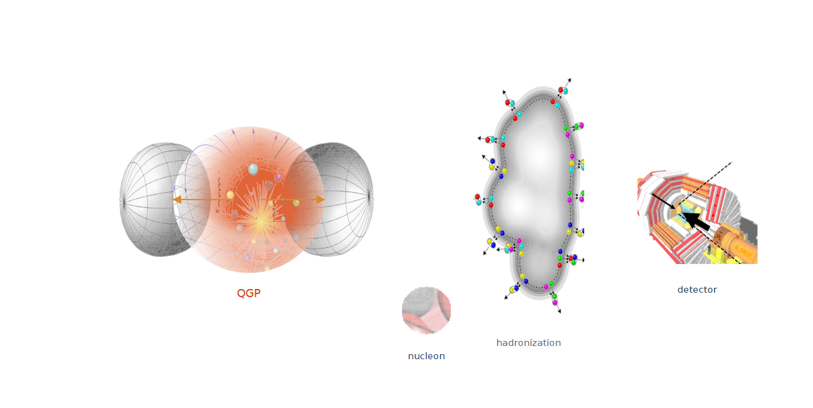
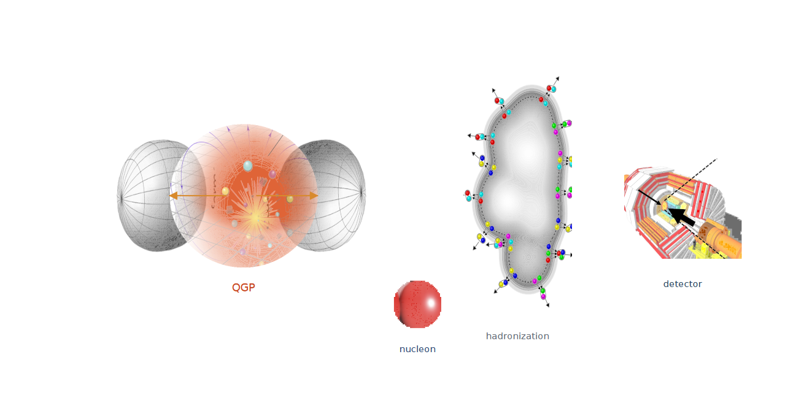
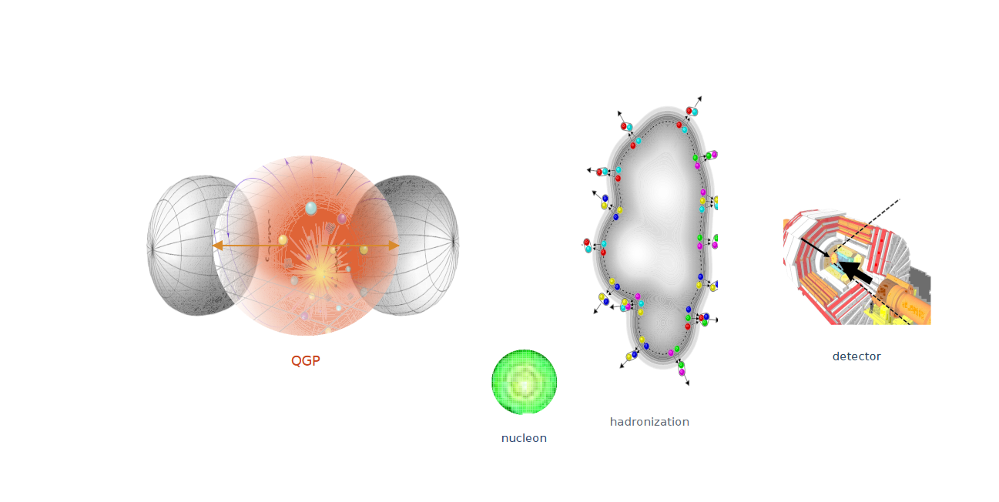
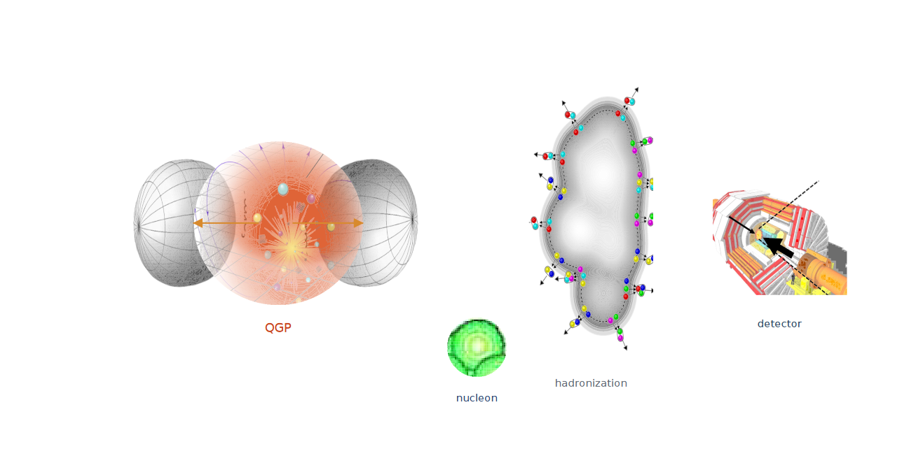
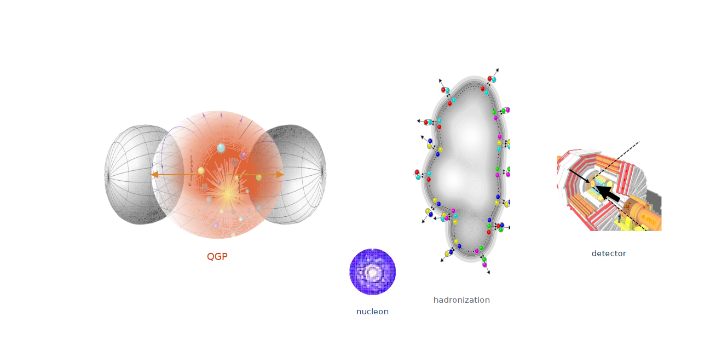
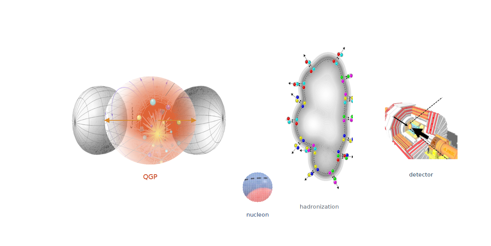
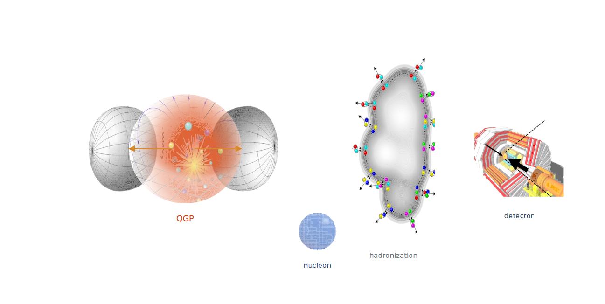
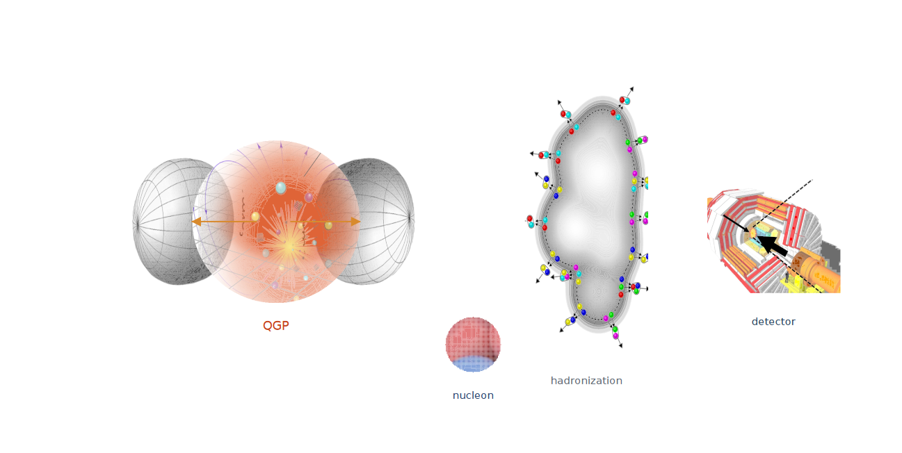
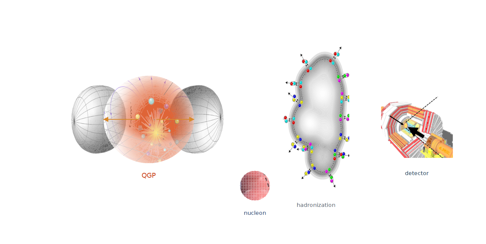
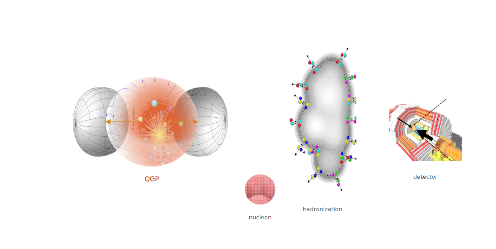

cand_01 · article_t330_dark_gray_nucleon
文章原图深灰核子 · article_vector_trace · safe=True

文章原图深灰核子 · article_vector_trace · safe=True
文章原图灰色核子 · article_vector_trace · safe=True
文章原图红色核子 · article_vector_trace · safe=True

文章原图高光红色核子 · article_vector_trace · safe=True

文章原图绿色核子（右） · article_vector_trace · safe=True

文章原图绿色核子（上） · article_vector_trace · safe=True

文章原图紫色核子 · article_vector_trace · safe=True
文章原图红色核子（下） · article_vector_trace · safe=True
文章原图红色核子（上） · article_vector_trace · safe=True

文章原图后层蓝色中子 · article_vector_trace · safe=True
文章原图中央蓝色中子 · article_vector_trace · safe=True
文章原图右下蓝色中子 · article_vector_trace · safe=True

文章原图上方蓝色中子 · article_vector_trace · safe=True

文章原图左下红色质子 · article_vector_trace · safe=True

文章原图右侧红色质子 · article_vector_trace · safe=True

文章原图前方红色质子 · article_vector_trace · safe=True